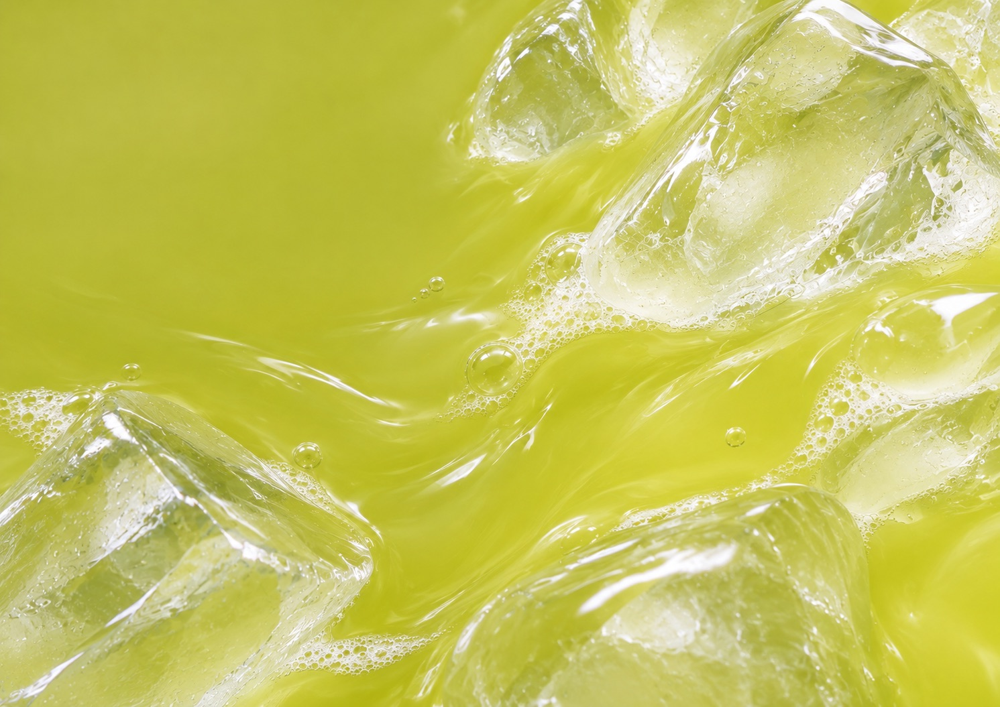
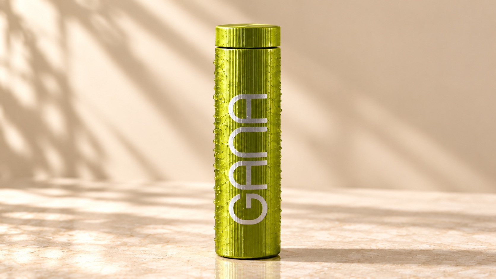
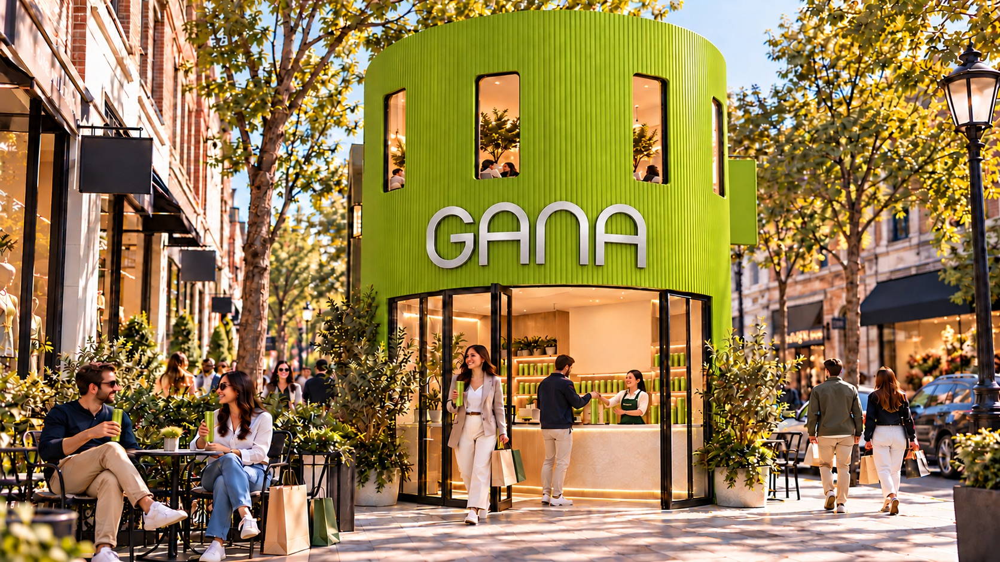
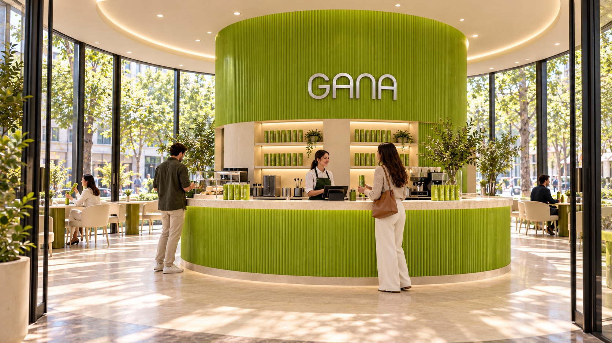
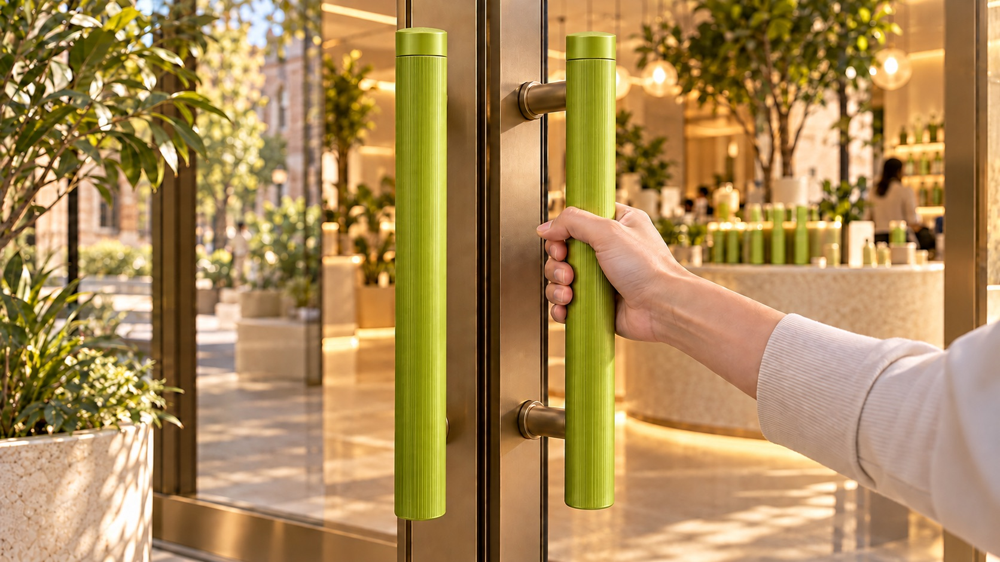
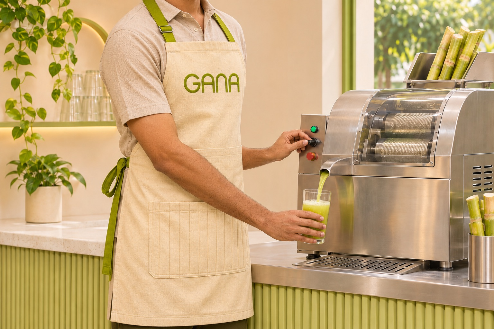
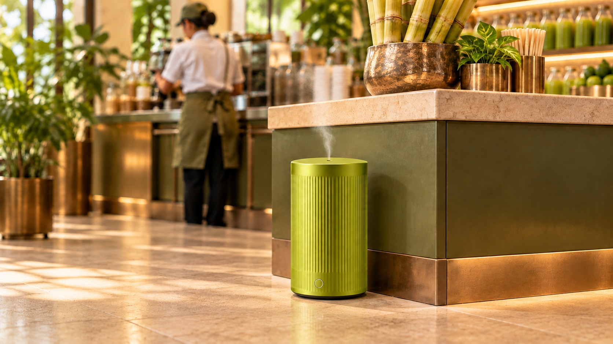

Experience
Bottle, building, touch, sound, scent.
How GANA feels in every place you meet it.

Packaging
Packaging brings “Feel the Cane” directly into people’s hands. The tall cylindrical bottle and its raised texture translate the form and surface of sugarcane into an everyday object.
Preserve the established bottle: a uniform diameter, a flush cap of the same diameter, and softly chamfered edges. Use the approved silver logo treatment and keep product information clear.

Storefront
The storefront extends the bottle’s design into architecture. Vertical forms, cane-inspired texture and the established palette create a visible connection between the product and the place.
Carry the texture through selected surfaces, including the façade, counter and door handles. Keep the approved silver logo clearly visible and proportionate to the entrance.

Interior
Interior spaces should feel fresh, welcoming and easy to navigate. Make ordering, preparation and pickup areas clear.
Where the layout allows, let customers see the pressing process. Balance textured surfaces with quieter areas so the space feels comfortable.

Touch
“Feel the Cane” is GANA’s main tactile expression. The texture helps people recognize the brand through physical contact as well as appearance.
The bottle is the primary point of contact. Counters, door handles, carriers and selected surfaces extend the idea. Test physical samples for grip, edges and durability.

Sound
“First Press” connects the sound of preparation to the product, so the moment the cane is pressed becomes part of the brand.
Let customers see and hear the pressing where the layout allows, strengthening the connection between the ingredient and the drink.

Scent
Scent supports the connection to the ingredient and the freshness of the store. The existing direction uses a floor-standing diffuser in GANA Green #99BC20, near the service area without interrupting circulation.
Keep any added scent subtle so it sits comfortably alongside the aroma of preparation and the drink itself.